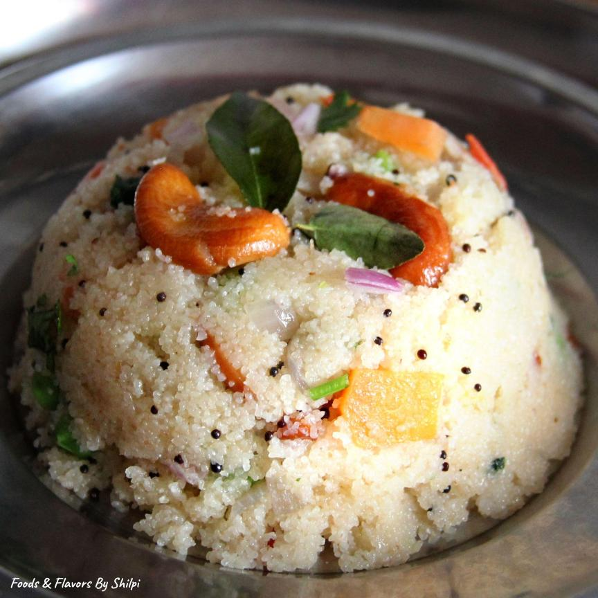

Upma

The recipe to this famous Indian breakfast
Upma is an Indian breakfast which is made up on primarily Rawa or Sooji. It can be made in 30 minutes. But it takes less than 5 minutes to finish.
There are different types of Upma according to geographical locations. North Indian upma is different from South Indian upma.
Ingredients
- Rawa
- Peanuts
- Onions
- chilli
- tomato
- potato
- Oil
- mustard seeds
- cumin
- chilli powder
- Turmeric powder
- Salt
Steps
- Cut the vegetables finely and keep them aside
- Dry roast the Rawa until it becomes golden, keep this aside
- Take 1 teaspoon of oil in a pan
- Heat the oil in low flame
- Put the peanuts in it until they become crispy
- Take the peanuts out
- Put mustard seeds and cumin
- Put the chilli, cook for 1 minute
- Put the chopped onions, mix it well and leave till they become translucent
- Put other vegetables too, wait for them to cook
- Add the spices and cook them for two minutes
- Add water and leave it till the water starts boiling
- Add the rawa in boiling water, while constantly stirring it
- Wait till all the water is soaked
- Sprinkle some lemon on it and cover it with a plate.
- leave it for 10 minutes
- It is ready to serve
Go back to main page